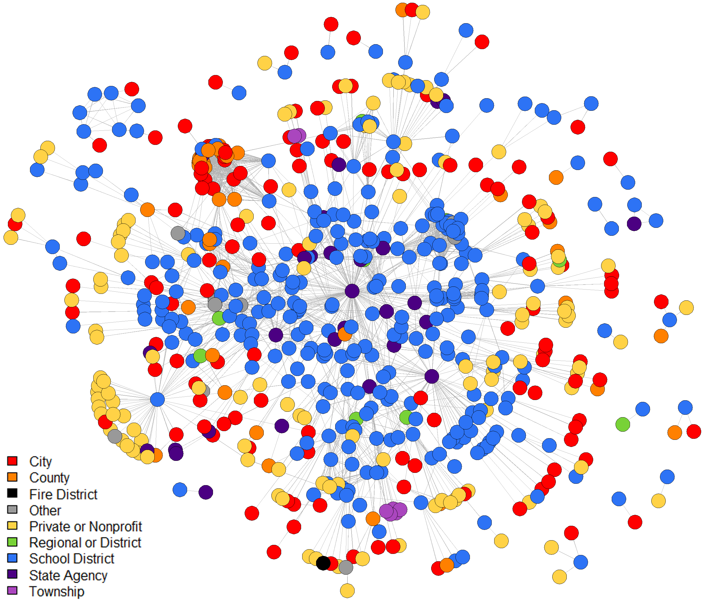
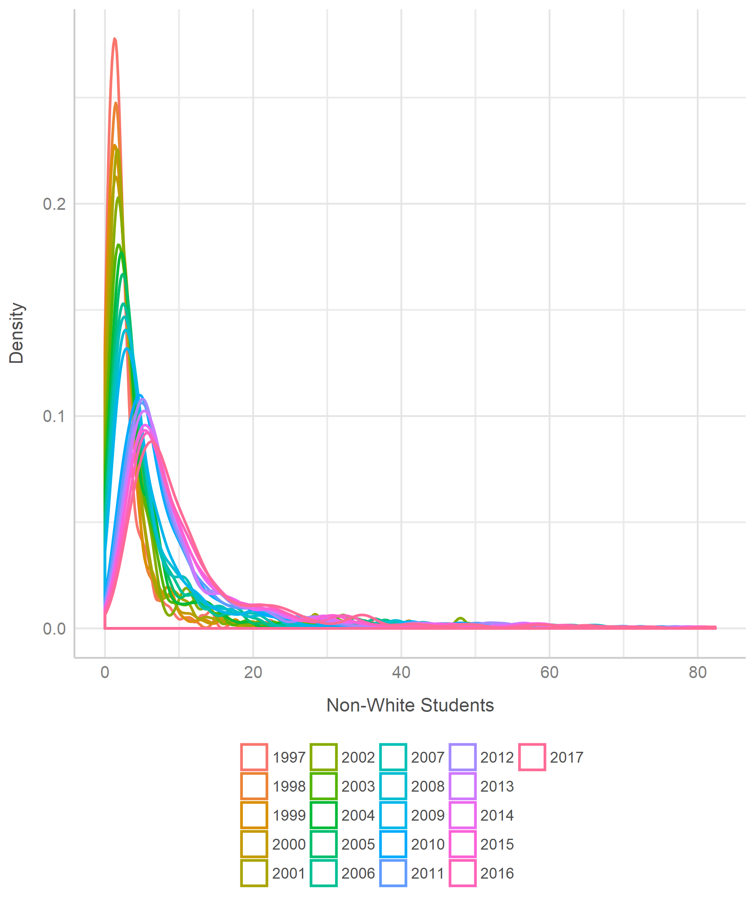
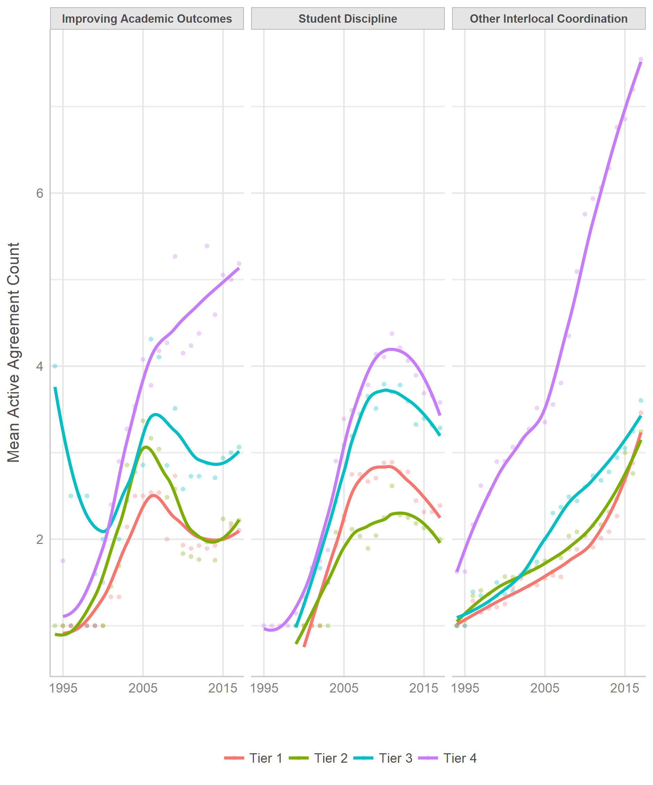
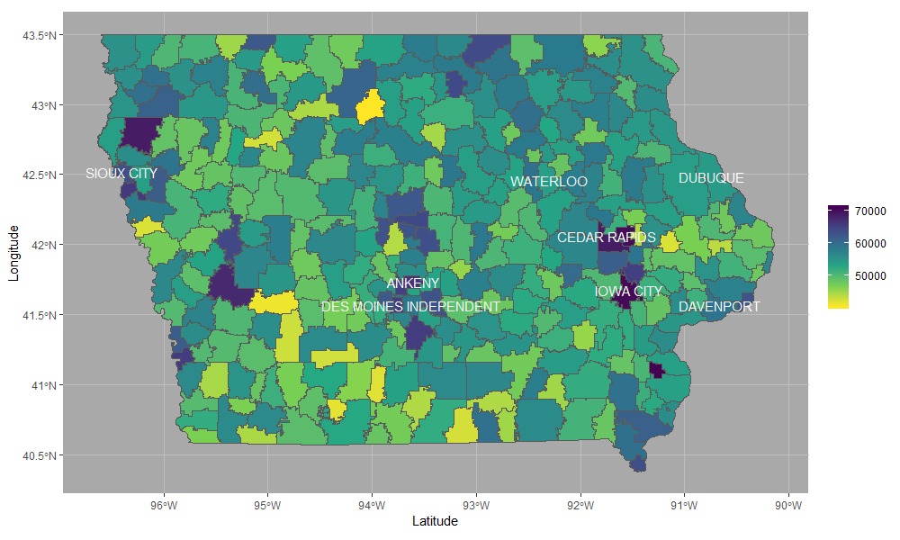
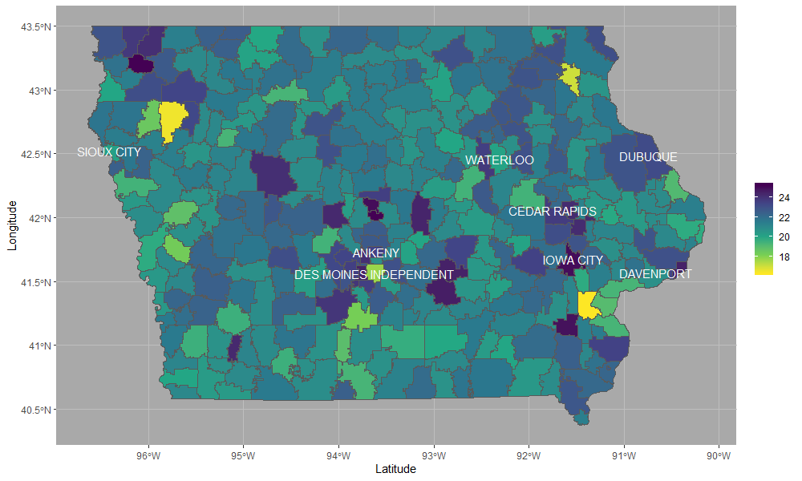

Here are several plots I created for my dissertation using statnet, ggplot2, and GIS shape files. Be sure to check out the R Graph Gallery for many more examples of R visualizations.
I consider Douglas A. Luke’s 2015 book, A User’s Guide to Network Analysis in R, to be the bible of network visualization. SNA scholars would be wise to invest in a copy.
colors = c(
"#FF0000",
"#FF8000",
"#000000",
"#999999",
"#FFD246",
"#78D237",
"#2D73F5",
"#4B0082",
"#AA46BE"
)
plot(
education_networks[[25]],
displayisolates = F,
vertex.col = colors[as.factor(network_attributes$org_type)],
edge.lwd = 0.1,
edge.col = "gray70",
mode = "fruchtermanreingold",
layout.par = list(niter = 10000), interactive = T
)
legend(
"bottomleft",
fill = colors,
legend = c(
"City",
"County",
"Fire District",
"Other",
"Private or Nonprofit",
"Regional or District",
"School District",
"State Agency",
"Township"
)
)Call ?network::plot.network to read the R help file on plotting statnet objects.

Use ggplot2:ggsave() with the Cairo package to create high-resolution, anti-aliased images suitable for publication or presentations.
library(see)
ggplot(imputed_normalized_attributes %>% filter(year > 1996), aes(non_white, color = as.factor(year))) +
geom_density(size = 0.75) + xlab("Non-White Students") + ylab("Density") +
theme_lucid(legend.position = "bottom", legend.text.size = 9) + labs(color = "")
ggsave("../Dissertation/Figure 11.png", width = 6.25, height = 7.5, dpi = 300, type = "cairo-png")
ggplot(data_for_plots, aes(year, mean_count, color = district_size_class)) +
geom_point2(alpha = 0.33) + geom_smooth(se = F) + facet_wrap( ~ broad_topic) +
xlab("") + ylab("Mean Active Agreement Count") + labs(color = "") +
theme_lucid(legend.position = "bottom", legend.text.size = 9, axis.text.size = 9, base_size = 10) +
scale_x_discrete(limits = seq(1995, 2015, 10))
ggsave("../Dissertation/Figure 16.png", width = 6.25, height = 7.5, dpi = 300, type = "cairo-png")
library(sf)
district_shapes = st_read("../Data/School District Shapefiles/IowaSchoolDistrictsFY18.shp")
district_shapes$DE_DIST = as.character(district_shapes$DE_DIST)
district_shapes_with_attributes = left_join(
district_shapes,
imputed_normalized_attributes %>%
filter(year == 2017) %>%
select(
district_code,
enrollment,
act_composite_mean,
removals,
k12_avg_daily_attendance_rate,
non_white,
teacher_salary
),
by = c("DE_DIST" = "district_code")
)ggplot(district_shapes_with_attributes) +
geom_sf(aes(fill = teacher_salary * 1000)) +
scale_fill_viridis_c(option = "D", direction = -1) +
geom_sf_text(
data = district_shapes_with_attributes %>% filter(enrollment > 10000),
label = district_shapes_with_attributes %>% filter(enrollment > 10000) %>% pull(SchoolDist),
color = "white",
size = 4
) + xlab("Latitude") + ylab("Longitude") +
theme(
panel.background = element_rect(fill = "darkgray"),
panel.grid = element_line(color = "gray"),
legend.title = element_blank()
)Average teacher salary by public school district:

Average ACT score by public school district:

I save these by using RStudio’s export function; ggsave has trouble with scaling shape borders and text labels properly.